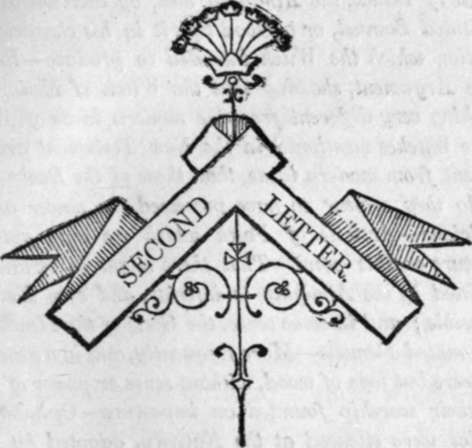

Second Letter
Description
This section is from the book "Letters On Demonology And Witchcraft", by Walter Scott. Also available from Amazon: Letters On Demonology & Witchcraft.
Second Letter
Consequences of the Fall on the communication "between Men and the Spiritual World—Effects of the Flood—Wizards of Pharaoh—Text in Exodus against Witches—The word Witch is by some said to mean merely Poisoner—Or if in tlie holy text it also means a Divineress, she must, at any rate, have been a character very different to be identified with it—The original, Chasaph, said to mean a person who dealt in Poisons, often a traffic of those who dealt with Familiar Spirits—but different from the European Witch of the Middle Ages—Thus a Witch is not accessary to the temptation of Job—The Witch of the Hebreics probably did not rank higher than a Divining Woman — Yet it was a crime deserving the doom of death, since it inferred the disowning of Jehovah's Supremacy—Other texts of Scripture, in like manner, refer to something corresponding more with a Fortune-teller or Divining Woman, tlian what is now called a Witch—Example of the Witch of Endor—Account of her Meeting with Saul—Supposed by some a mere Impostor—by others, a Sorceress powerful enough to raise the Spirit of the Prophet by her own art—Difficulties attending both positions—A middle course adopted, supposing that, as in the case of Balah, the A Almighty had, by exertion of his will, substituted Samuel, or a Good Spirit in his character, for the deception which the Witch intended to produce—Resumption of the Argument, showing that the Witch of Endor signified something very different from the modern ideas of Witchcraft —The Witches mentioned in the New Testament are not less different from modern ideas, than those of the Boohs of Moses, nor do they appear to have possessed the power ascribed to Magicians—Articles of Faith which we may gather from Scripture on this point—That there might be certain Powers permitted by the Almighty to inferior, and even Evil Spirits, is possible ; and in some sense, the Gods of the Heathens might be accounted Demons—More frequently, and in a general sense, they were but logs of wood, without sense or power of any kind, and their worship founded on imposture—Opinion that the Oracles were silenced at the Nativity, adopted by Milton— Cases of Demoniacs—The incarnate Possessions probably ceased at the same time as the intervention of Miracles—Opinion of the Catholics—Result that Witchcraft, as the word is interpreted in the Middle Ages, neither occurs under the Mosaic or Gospel Dispensation—It arose in the ignorant period, when the Christians considered the Gods of the Mahommedan or Heathen Nations as Fiends, and their Priests as Conjurors or Wizards —Instance as to the Saracens, and among the Northern Europeans yet unconverted—The Gods of Mexico and Peru explained on the same system—Also the Powahs of North America—Opinion of Mather—Gibb, a supposed Warlock, persecuted by the other Dissenters—Conclusion.
WHAT degree of communication might have existed between the human race and the inhabitants of the other world, had our first parents kept the commands of the Creator, can only be subject of unavailing speculation. "We do not, perhaps, presume too much when we suppose, with Milton, that one necessary consequence of eating the " fruit of that forbidden tree " was removing to a wider distance from celestial essences the beings, who, although originally but a little lower than the angels, had, by their own crime, forfeited the gift of immortality, and degraded themselves into an inferior rank of creation. It is probable, however, that the extreme longevity of the antediluvian mortals prevented their feeling sufficiently that they had brought themselves under the banner of Azrael, the angel of death, and removed to too great a distance the period between their crime and its punishment. But the date of the avenging Flood gave birth to a race, whose life was gradually shortened, and who, being admitted to slighter and rarer intimacy with beings who possessed a higher rank in creation, assumed, as of course, a lower position in the scale.
In the meantime, while the Deity was pleased to continue his manifestations to those who were destined to be the fathers of his elect people, we are made to understand that wicked men, it may be by the assistance of fallen angels, were enabled to assert rank with, and attempt to match, the prophets of the God of Israel. The matter must remain uncertain, whether it was by sorcery or legerdemain that the wizards of Pharaoh, King of Egypt, contended with Moses, in the face of prince and people, changed their rods into serpents, and imitated several of the plagues denounced against the devoted kingdom. Those powers of the Magi, however, whether obtained by supernatural communications, or arising from knowledge of legerdemain and its kindred accomplishments, were openly exhibited; and who can doubt that, though we may be left in some darkness, both respecting the extent of their skill and the source from which it was drawn, we are told all which it can be important for us to know ? We arrive here at the period when the Almighty chose to take upon himself directly to legislate for his chosen people, without having obtained any accurate knowledge, whether the crime of witchcraft, or the intercourse between the spiritual world and embodied beings, for evil purposes, either existed after the Flood, or was visited with any open marks of Divine displeasure.
But in the law of Moses, dictated by the Divinity himself, was announced a text, which, as interpreted literally, having been inserted into the criminal code of all Christian nations, has occasioned much cruelty and bloodshed, either from its tenor being misunderstood, or that, being exclusively calculated for the Israelites, it made part of the judicial Mosaic dispensation, and was abrogated, like the greater part of that law, by the more benign and clement dispensation of the Gospel.
The text alluded to is that verse of the twenty-second chapter of Exodus, bearing, " men shall not suffer a witch to live." Many learned men have affirmed, that in this remarkable passage the Hebrew word chasaph means nothing more than poisoner, although, like the word veneficus, by which it is rendered in the Latin version of the Septuagint, other learned men contend that it hath the meaning of a witch also, and may be understood as denoting a person who pretended to hurt his or her neighbours in life, limb, or goods, either by noxious potions, by charms, or similar mystical means. In this particular the witches of Scripture had probably some resemblance to those of ancient Europe, who, although their skill and power might be safely despised, as long as they confined themselves to their charms and spells, were very apt to eke out their capacity of mischief by the use of actual poison, so that the epithets of sorceress and poisoner were almost synonymous. This is known to have been the case in many of those darker iniquities, which bear as their characteristic something connected with hidden and prohibited arts. Such was the statement in the indictment of those concerned in the famous murder of Sir Thomas Overbury, when, the arts of Forman and other sorcerers having been found insufficient to touch the victim's life, practice by poison was at length successfully resorted to; and numerous similar instances might be quoted. But supposing that the Hebrew witch proceeded only by charms, invocations, or such means as might be innoxious, save for the assistance of demons or familiars, the connexion between the conjurer and the demon must have been of a very different character, under the Law of Moses, from that which was conceived, in latter days, to constitute witchcraft. There was no contract of subjection to a diabolic power, no infernal stamp or sign of such a fatal league, no revellings of Satan and his hags, and no infliction of disease or misfortune upon good men. At least there is not a word in Scripture authorizing us to believe that such a system existed. On the contrary, we are told, (how far literally, how far metaphorically, it is not for us to determine,) that, when the Enemy of mankind desired to probe the virtue of Job to the bottom, he applied for permission to the Supreme Governor of the world, who granted him liberty to try his faithful servant with a storm of disasters, for the more brilliant exhibition of the faith which he reposed in his Maker. In all this, had the scene occurred after the manner of the like events in latter days, witchcraft, sorceries, and charms, would have been introduced, and the Devil, instead of his own permitted agency, would have employed his servant the witch, as the necessary instrument of the Man of Uzz's afflictions. In like manner, Satan desired to have Peter, that he might sift him like wheat. But neither is there here the agency of any sorcerer or witch. (Luke, xxii. 31.)
Continue to: